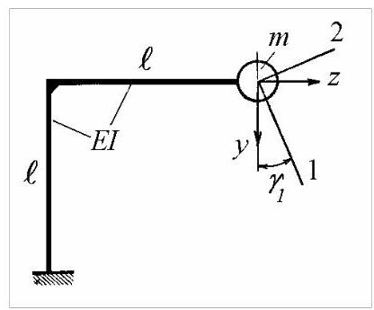
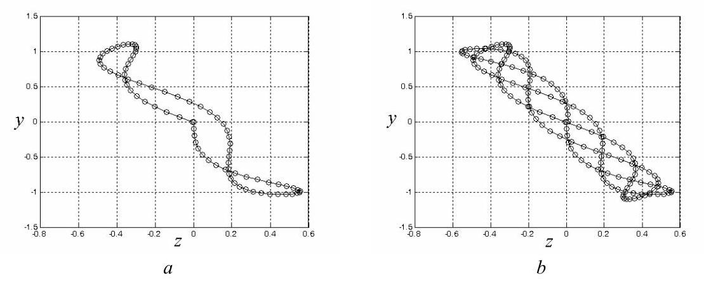
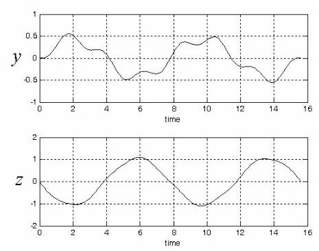

第20篇
4.3.4 自由振动
令
\[
\left\lbrack u\right\rbrack = \left\lbrack {\{ u{\} }_{1}\;\{ u{\} }_{2}}\right\rbrack = \left\lbrack \begin{array}{ll} {u}_{11} & {u}_{12} \\ {u}_{21} & {u}_{22} \end{array}\right\rbrack \tag{4.88}
\]
表示归一化模态振型矩阵(模态矩阵)。
实际挠度，下文用\(\{ x\}\)而非\(\{ y\}\)表示，可按式(4.23)用模态坐标表达
\[
\{ x\} = \left\lbrack u\right\rbrack \{ q\} = \{ u{\} }_{1}{q}_{1} + \{ u{\} }_{2}{q}_{2} = \mathop{\sum }\limits_{{i = 1}}^{2}{C}_{i}\cos \left( {{\omega }_{i}t - {\varphi }_{i}}\right) \{ u{\} }_{i}. \tag{4.89}
\]
常数\({C}_{i}\)和\({\varphi }_{i}\)可由运动的初始条件求出
\[
\{ x\left( 0\right) \} = \mathop{\sum }\limits_{{i = 1}}^{2}{C}_{i}\cos {\varphi }_{i}\{ u{\} }_{i}, \tag{4.90}
\]
\[
\{ \dot{x}\left( 0\right) \} = \mathop{\sum }\limits_{{i = 1}}^{2}{\omega }_{i}{C}_{i}\sin {\varphi }_{i}\{ u{\} }_{i}. \tag{4.91}
\]
将式(4.90)和(4.91)前乘\(\{ u{\} }_{j}^{\mathrm{T}}\left\lbrack m\right\rbrack\)，利用正交关系(4.18)-(4.19)以及模态质量定义(4.25)和(4.28)
\[
\{ u{\} }_{j}^{\mathrm{T}}\left\lbrack m\right\rbrack \{ u{\} }_{i} = 0,\;i \neq j\;{M}_{i} = \{ u{\} }_{i}^{\mathrm{T}}\left\lbrack m\right\rbrack \{ u{\} }_{i},\;i = 1,2 \tag{4.92}
\]
我们得到
\[
\{ u{\} }_{j}^{\mathrm{T}}\left\lbrack m\right\rbrack \{ x\left( 0\right) \} = {C}_{j}{M}_{j}\cos {\varphi }_{j},\;j = 1,2 \tag{4.93}
\]
\[
\{ u{\} }_{j}^{\mathrm{T}}\left\lbrack m\right\rbrack \{ \dot{x}\left( 0\right) \} = {\omega }_{j}{C}_{j}{M}_{j}\sin {\varphi }_{j}.\;j = 1,2 \tag{4.94}
\]
合并式(4.93)和(4.94)并重命名指标得
\[
\tan {\varphi }_{i} = \frac{\{ u{\} }_{i}^{\mathrm{T}}\left\lbrack m\right\rbrack \{ \dot{x}\left( 0\right) \} }{{\omega }_{i}\{ u{\} }_{i}^{\mathrm{T}}\left\lbrack m\right\rbrack \{ x\left( 0\right) \} },\;i = 1,2 \tag{4.95}
\]
以及
\[
{C}_{i} = \frac{\{ u{\} }_{i}^{\mathrm{T}}\left\lbrack m\right\rbrack \{ x\left( 0\right) \} }{{M}_{i}\cos {\varphi }_{i}} = \frac{\{ u{\} }_{i}^{\mathrm{T}}\left\lbrack m\right\rbrack \{ \dot{x}\left( 0\right) \} }{{\omega }_{i}{M}_{i}\sin {\varphi }_{i}}.\;i = 1,2 \tag{4.96}
\]
例4.6
对于图4.17所示系统:a) 确定固有振型；b) 当质量具有初始竖向速度\(v\)时，推导自由振动方程并计算质量的运动轨迹。

图4.17
解。a) 设\(y\)和\(z\)为质量\(m\)瞬时位移的竖向和水平分量。
柔度系数为
\[
{\delta }_{yy} = 4{\ell }^{3}/{3EI},{\delta }_{yz} = {\delta }_{zy} = {\ell }^{3}/{2EI},\;{\delta }_{zz} = {\ell }^{3}/{3EI}.
\]
运动方程可写为
\[
\frac{4{\ell }^{3}}{3EI}m\ddot{y} + \frac{{\ell }^{3}}{2EI}m\ddot{z} + y = 0,
\]
\[
\frac{{\ell }^{3}}{2EI}m\ddot{y} + \frac{{\ell }^{3}}{3EI}m\ddot{z} + z = 0.
\]
寻找如下形式的解
\[
y\left( t\right) = {u}_{1}\cos \left( {{\omega t} - \varphi }\right) ,\;z\left( t\right) = {u}_{2}\cos \left( {{\omega t} - \varphi }\right)
\]
我们得到
\[
\left( {8 - \beta }\right) {u}_{1} + 3{u}_{2} = 0,
\]
\[
3{u}_{1} + \left( {2 - \beta }\right) {u}_{2} = 0,
\]
其中
\[
\beta = {6EI}/m{\ell }^{3}{\omega }^{2}.
\]
频率方程为
\[
\left| \begin{matrix} 8 - \beta & 3 \\ 3 & 2 - \beta \end{matrix}\right| = 0,\;{\beta }^{2} - {10\beta } + 7 = 0,
\]
其解为
\[
{\beta }_{1} = {9.2426},\;{\beta }_{2} = {0.7574}.
\]
固有频率为
\[
{\omega }_{1} = {0.8057}\sqrt{{EI}/m{\ell }^{3}},\;{\omega }_{2} = {2.8146}\sqrt{{EI}/m{\ell }^{3}}.
\]
振型由下式给出
\[
{\mu }_{1} = {\left( \frac{{u}_{2}}{{u}_{1}}\right) }_{1} = \frac{{u}_{21}}{{u}_{11}} = \frac{{\beta }_{1} - 8}{3} = {0.4142},\;{\mu }_{2} = {\left( \frac{{u}_{2}}{{u}_{1}}\right) }_{2} = \frac{{u}_{22}}{{u}_{12}} = \frac{{\beta }_{2} - 8}{3} = - {2.4142}.
\]
以第一元素为单位进行归一化的模态向量为
\[
\{ u{\} }_{1} = \left\{ \begin{matrix} 1 \\ {0.4142} \end{matrix}\right\} ,\;\{ u{\} }_{2} = \left\{ \begin{matrix} 1 \\ - {2.4142} \end{matrix}\right\} .
\]
可以看出
\[
\frac{{u}_{21}}{{u}_{11}} = \tan {\gamma }_{1} = {0.4142},\;{\gamma }_{1} = {22.5}^{0},
\]
\[
\frac{{u}_{22}}{{u}_{12}} = \tan {\gamma }_{2} = - {2.4142},\;{\gamma }_{2} = {112.5}^{0} = {\gamma }_{1} + {90}^{0}.
\]
质量\(m\)在固有振型中作单向运动。模态向量\(\{ u{\} }_{1}^{\mathrm{T}}\{ u{\} }_{2} = 0\)正交。第一阶振型的运动方向为方向1，与垂直方向成\({22.5}^{0}\)角。第二阶振型的运动方向为方向2，与方向1垂直，夹角为\({122.5}^{0}\)。这是因为模态坐标下的运动沿主柔度(principal flexibilities)方向进行。
柔度矩阵
\[
\left\lbrack \delta \right\rbrack = \frac{{\ell }^{3}}{6EI}\left\lbrack \begin{array}{ll} 8 & 3 \\ 3 & 2 \end{array}\right\rbrack
\]
表示在质量作用点处，位移分量\(y\)和\(z\)与作用力分量\({f}_{y}\)和\({f}_{z}\)之间的位移-力关系
\[
\left\{ \begin{array}{l} y \\ z \end{array}\right\} = \left\lbrack \begin{array}{ll} {\delta }_{yy} & {\delta }_{yz} \\ {\delta }_{zy} & {\delta }_{zz} \end{array}\right\rbrack \left\{ \begin{array}{l} {f}_{y} \\ {f}_{z} \end{array}\right\} .
\]
考虑参考坐标系\({y}^{ * }O{z}^{ * }\)相对于坐标系\({yOz}\)旋转角度\(\gamma\)。位移的变换可写为
\[
\left\{ \begin{array}{l} {y}^{ * } \\ {z}^{ * } \end{array}\right\} = \left\lbrack \begin{matrix} \cos \gamma & \sin \gamma \\ - \sin \gamma & \cos \gamma \end{matrix}\right\rbrack \left\{ \begin{array}{l} y \\ z \end{array}\right\}
\]
力的变换定义为
\[
\left\{ \begin{array}{l} {f}_{y}^{ * } \\ {f}_{z}^{ * } \end{array}\right\} = \left\lbrack \begin{matrix} \cos \gamma & \sin \gamma \\ - \sin \gamma & \cos \gamma \end{matrix}\right\rbrack \left\{ \begin{array}{l} {f}_{y} \\ {f}_{z} \end{array}\right\} .
\]
新的位移-力关系为
\[
\left\{ \begin{array}{l} {y}^{ * } \\ {z}^{ * } \end{array}\right\} = \left\lbrack {\delta }^{ * }\right\rbrack \left\{ \begin{array}{l} {f}_{y}^{ * } \\ {f}_{z}^{ * } \end{array}\right\}
\]
其中
\[
\left\lbrack {\delta }^{ * }\right\rbrack = \left\lbrack \begin{matrix} c & s \\ - s & c \end{matrix}\right\rbrack \left\lbrack \delta \right\rbrack \left\lbrack \begin{matrix} c & - s \\ s & c \end{matrix}\right\rbrack
\]
与\(c = \cos \gamma\)和\(s = \sin \gamma\)。
旋转参考系中的柔度矩阵(flexibility matrix)为
\[
\left\lbrack {\delta }^{ * }\right\rbrack = \left\lbrack \begin{matrix} {\delta }_{yy}{c}^{2} + {\delta }_{zz}{s}^{2} + 2{\delta }_{yz}{cs} & \left( {{\delta }_{zz} - {\delta }_{yy}}\right) {sc} + {\delta }_{yz}\left( {{c}^{2} - {s}^{2}}\right) \\ \left( {{\delta }_{zz} - {\delta }_{yy}}\right) {sc} + {\delta }_{yz}\left( {{c}^{2} - {s}^{2}}\right) & {\delta }_{yy}{s}^{2} + {\delta }_{zz}{c}^{2} - 2{\delta }_{yz}{cs} \end{matrix}\right\rbrack .
\]
可以看出，存在两个角度\({\gamma }^{ * }\)使非对角元素为零，其表达式为
\[
\tan 2{\gamma }^{ * } = \frac{2{\delta }_{yz}}{{\delta }_{yy} - {\delta }_{zz}} = \frac{2 \cdot 3}{8 - 2} = 1,\;{\gamma }_{1}^{ * } = {22.5}^{0},\;{\gamma }_{2}^{ * } = {112.5}^{0}.
\]
这两个解\({\gamma }_{1}^{ * }\)和\({\gamma }_{2}^{ * }\)定义了柔度的主方向(principal directions of flexibility)。将这些角度代入对角元素表达式，我们得到主柔度(principal flexibilities)
\[
{\delta }_{1,2} = \frac{{\delta }_{yy} + {\delta }_{zz}}{2} \pm \sqrt{{\left( \frac{{\delta }_{yy} - {\delta }_{zz}}{2}\right) }^{2} + {\delta }_{yz}^{2}} = \frac{5 \pm 3\sqrt{2}}{6}\frac{{\ell }^{3}}{EI},
\]
\[
{\delta }_{1} = {1.5404}\frac{{\ell }^{3}}{EI},\;{\delta }_{2} = {0.1262}\frac{{\ell }^{3}}{EI}.
\]
其含义显而易见。沿1(或2)方向施加的力仅产生沿1(或2)方向的挠度。柔度的主方向与固有振动模态(principal modes of vibration)中的振动方向一致。
固有频率(natural frequencies)由下式给出
\[
{\omega }_{1} = \sqrt{\frac{1}{m{\delta }_{1}}} = \frac{1}{\sqrt{1.5404}}\sqrt{\frac{EI}{m{\ell }^{3}}} = {0.805}\sqrt{\frac{EI}{m{\ell }^{3}}},
\]
\[
{\omega }_{2} = \sqrt{\frac{1}{m{\delta }_{2}}} = \frac{1}{\sqrt{0.1262}}\sqrt{\frac{EI}{m{\ell }^{3}}} = {2.815}\sqrt{\frac{EI}{m{\ell }^{3}}}.
\]
b) 为确定对速度\(v\)的竖向脉冲的自由响应，首先计算模态质量(modal masses)
\[
{M}_{1} = m\left( {{u}_{11}^{2} + {u}_{21}^{2}}\right) = m\left( {1 + {0.4142}^{2}}\right) = {1.1716m},
\]
\[
{M}_{2} = m\left( {{u}_{12}^{2} + {u}_{22}^{2}}\right) = m\left( {1 + {2.4142}^{2}}\right) = {6.8284m}.
\]
初始条件为
\[
\{ x\left( 0\right) \} = \left\{ \begin{array}{l} 0 \\ 0 \end{array}\right\} ,\{ \dot{x}\left( 0\right) \} = \left\{ \begin{array}{l} v \\ 0 \end{array}\right\} .
\]
由(4.93)和(4.96)可得
\[
\cos {\varphi }_{1} = 0,\;\cos {\varphi }_{2} = 0,
\]
\[
{C}_{1}\sin {\varphi }_{1} = \frac{mv}{{\omega }_{1}{M}_{1}},\;{C}_{2}\sin {\varphi }_{2} = \frac{mv}{{\omega }_{2}{M}_{2}}.
\]

图4.18

图4.19
瞬时位移的竖向分量为
\[
y\left( t\right) = {C}_{1}\cos \left( {{\omega }_{1}t - {\varphi }_{1}}\right) {u}_{11} + {C}_{2}\cos \left( {{\omega }_{2}t - {\varphi }_{2}}\right) {u}_{12},
\]
\[
y\left( t\right) = \frac{mv}{{\omega }_{1}{M}_{1}}\sin {\omega }_{1}t + \frac{mv}{{\omega }_{2}{M}_{2}}\sin {\omega }_{2}t,
\]
\[
y\left( t\right) = C\left( {{1.0593}\sin {\omega }_{1}t + {0.0520}\sin {\omega }_{2}t}\right) ,
\]
\[
C = v\sqrt{\frac{m{\ell }^{3}}{EI}},{\omega }_{1} = {0.805v}/C,{\omega }_{2} = {2.815v}/C.
\]
瞬时位移的水平分量为
\[
z\left( t\right) = {C}_{1}\cos \left( {{\omega }_{1}t - {\varphi }_{1}}\right) {u}_{21} + {C}_{2}\cos \left( {{\omega }_{2}t - {\varphi }_{2}}\right) {u}_{22},
\]
\[
z\left( t\right) = \frac{mv}{{\omega }_{1}{M}_{1}}{u}_{21}\sin {\omega }_{1}t + \frac{mv}{{\omega }_{2}{M}_{2}}{u}_{22}\sin {\omega }_{2}t,
\]
\[
z\left( t\right) = C\left( {{0.4387}\sin {\omega }_{1}t - {0.1256}\sin {\omega }_{2}t}\right) .
\]
质量\(m\)的轨迹绘制于图4.18，\(a\)对应时间持续\({2\pi }/{\omega }_{1}\)，\(b\)对应\({4\pi }/{\omega }_{1}\)。两个分量\(y\)和\(z\)随时间变化绘制于图4.19。可见水平分量近似为简谐振动，第二分量幅值相对较小。
Matlab Demo
简单写了一个例题的示例代码


%% 1. 初始化环境
clear; % 清除工作区变量
clc; % 清除命令行窗口
close all; % 关闭所有已打开的图像窗口
%% 2. 定义系统参数 (源自教材方程)
% y(t)/C = 1.0593*sin(w1*t) + 0.0520*sin(w2*t)
% z(t)/C = 0.4387*sin(w1*t) - 0.1256*sin(w2*t)
% 无量纲化的固有频率
w1 = 0.8057;
w2 = 2.8146;
% 定义y(t)和z(t)方程中的系数
y_coeffs = [1.0593, 0.0520];
z_coeffs = [0.4387, -0.1256];
%% 3. 设置时间向量
T1 = 2 * pi / w1; % 约 7.7989秒
t_short = linspace(0, T1, 1500);
t_long = linspace(0, 16, 3000); % 时间上限为16秒
%% 4. 根据方程计算位移
% --- 计算原始位移 ---
y_calc_short = y_coeffs(1) * sin(w1 * t_short) + y_coeffs(2) * sin(w2 * t_short);
z_calc_short_orig = z_coeffs(1) * sin(w1 * t_short) + z_coeffs(2) * sin(w2 * t_short);
y_calc_long = y_coeffs(1) * sin(w1 * t_long) + y_coeffs(2) * sin(w2 * t_long);
z_calc_long_orig = z_coeffs(1) * sin(w1 * t_long) + z_coeffs(2) * sin(w2 * t_long);
% *** 物理方向修正 ***:
% 初始的向下(+y)冲击会使结构向左(-z)偏转。原始方程计算出的z初始方向
% 为微弱正向，与物理不符。因此乘以-1进行修正。
z_calc_short = -1 * z_calc_short_orig;
z_calc_long = -1 * z_calc_long_orig;
%% 5. 绘图部分
% --- 绘制图4.18: 运动轨迹 ---
figure('Name', '图4.18: 运动轨迹 (最终修正版)', 'NumberTitle', 'off');
% 子图 (a): 一个周期内的轨迹
subplot(1, 2, 1);
plot(z_calc_short, y_calc_short, 'b-', 'LineWidth', 1);
grid on; axis equal;
title('a)'); xlabel('z'); ylabel('y');
xlim([-0.8, 0.6]); ylim([-1.5, 1.5]);
set(gca, 'XTick', -0.8:0.2:0.6, 'YTick', -1.5:0.5:1.5);
% 子图 (b): 16秒内的轨迹
subplot(1, 2, 2);
plot(z_calc_long, y_calc_long, 'b-', 'LineWidth', 1);
grid on; axis equal;
title('b)'); xlabel('z'); ylabel('y');
xlim([-0.8, 0.6]); ylim([-1.5, 1.5]);
set(gca, 'XTick', -0.8:0.2:0.6, 'YTick', -1.5:0.5:1.5);
sgtitle('图4.18');
% --- 绘制图4.19: 位移时程图 ---
figure('Name', '图4.19: 位移时程图 (最终修正版)', 'NumberTitle', 'off');
% 上方子图 (y -> 复杂波形 -> 修正后的z_calc_long)
subplot(2, 1, 1);
plot(t_long, z_calc_long, 'r-', 'LineWidth', 1.5);
grid on; title(''); ylabel('y');
xlim([0, 16]); ylim([-1, 1]);
set(gca, 'XTick', 0:2:16, 'YTick', -1:0.5:1);
% 下方子图 (z -> 简单波形 -> y_calc_long)
subplot(2, 1, 2);
plot(t_long, y_calc_long, 'b-', 'LineWidth', 1.5);
grid on; title('');
xlabel('time'); ylabel('z');
xlim([0, 16]); ylim([-2, 2]);
set(gca, 'XTick', 0:2:16, 'YTick', -2:1:2);
sgtitle('图4.19');